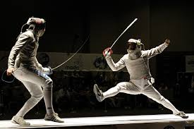
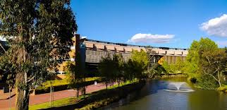
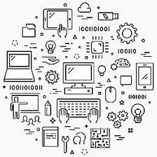

Hola!
Soy Christian, un estudiante de ingenieria informatica de 17 años. Naci en Bogotá el 17 de mayo de 2005 y en este blog voy a contar tanto mis experiencias como lo que quiero hacer con mi vida en un futuro asi que espero la experiencia sea agradable :D.
De donde Vengo?

Recuerdo pocas cosas de como empeze en mis estudios o que cosas me gustaban cuando era mas pequeño, se que empeze en un jardin de infantes llamado Gessel el cual estaba cerca de donde vivia, alli curse hasta prejardin y me traslade a el Colegio De La Universidad Libre para continuar con mis estudios. Se que alli era de los mas jovenes en mi grado y que al cabo de un año tuve que ir a un instituto aparte del colegio ya que tenia problemas disiplinarios y era bastante incumplido con mis trabajos desde bastante joven. Este instituto era dirigido por la que fue mi directora de curso en segundo y tercero de primaria, la recuerdo como una persona super estricta pero tambien como la primera persona que de alguna manera dejo una enseñanza significativa pese a que no la entendi hasta varios años despues.
A partir de cuarto de primaria pasaron 2 cosas importantes en mi vida; la primera es que sali de este instituto y la segunda fue que empeze con lo que en algun momento de mi vida considere como mi unica prioridad pero a eso le voy a dedicar una seccion aparte en este blog. Al salir del instituto y no tener a nadie que realmente me presionara para cumplir mis deberes, volvi a tener los mismos problemas que cuando empeze, cuando llegue a sexto tuve cierto artelcado con las personas que en ese momento eran mis amigos y cambie de curso, mi primer año en mi nuevo curso fue bastante regular ya que no me entendia con nadie y desconfiaba de todos. Hasta que en octavo conoci a una persona que a dia de hoy considero un hermano, me mostro que podia convivir con otras personas sin necesidad de que me hicieran daño o que yo lo hiciera, ya que era una persona supremamente conflictiva y puede que a dia de hoy todavia lo siga siendo pero gracias a el e mejorado mi convivencia con mi propio entorno. Es una persona que a dia de hoy sigue teniendo mucho impacto en mi vida y que realmente aprecio mas que a cualquier otra persona que haya conocido en estos ultimos años.
Mis ultimos años de bachillerato no fueron muy especiales debido a la pandemia aunque esta ultima tambien me impacto de gran manera pero no de una que a dia de hoy considere negativa, ya que ayudo a poner en perspectiva mi vida y quiza si no es por ella no estaria hoy en dia estudiando aca.
Que pudo haber sido?
Puede que este titulo sea un poco confuso, pero voy a hablar de aquello que pense que seria mi vida cuando tenia 13 o 14 años. Cuando tenia alrededor de 9 años empeze a entrenar esgrima en un pequeño club que se llamaba Mosqueteros, al principio solo fue un hobby al que iba para hacer un poco de actividad fisica los fines de semana pero al cabo de unos pocos meses empeze a competir a nivel distrital, nunca estuve muy seguro de por que lo hice, recuerdo los nervios que sentia antes de cada competencia y tambien lo mucho que llegue a sufrir solo por pensar en cada vez que perdia, realmente odiaba competir hasta el punto en el que casi me retiro alrededor de los 12 años. Pero entonces el que era el nuevo entrenador de alto rendimiento vio potencial en mi en la que yo pense que seria mi ultima competencia y decidio llevarme a entrenar con su grupo; la primera competencia que tuve bajo su entrenamiento fue un completo desastre, no pude alcanzar podio lo cual era lo que acostumbraba pese a que nunca ganaba la competencia, recuerdo pensar que me iba a hechar y que simplemente habia perdido su tiempo. Pero entonces decidio darme la oprtunidad de entrenar con el en lo que eran las vaciones de diciembre, donde lo normal era no hacer nada.
No estoy seguro de que fue lo que senti en ese momento pero sabia que no queria desperdiciar esa oportunidad asi que netrene lo mas que pude absolutamente todos los dias hasta la siguente competencia. Apartir de esa siguiente competencia empeze a ganar de manera increible sobre mis competidores y lo mejor es que lo mantuve por 2 años; fui campeon nacional 2 años seguidos y consegui una medalla de bronce en una competencia panamericana juvenil, en este punto es cuando yo estaba convencido de que mi futuro estaba en esas pistas, de que esa iba a ser mi vida, pero lamentablemente no supe manejar nada de lo que estaba viviendo con esa edad.
Poco antes de empezar la pandemia mis resultados empezaron a bajar debido a las multiples irresponsabilidades que cometia de manera continua y cuando menos me di cuenta la confianza de aquel que fue la persona que me formo como deportista y que me consideraba un amigo se perdio. Justo en ese momento empezo la pandemia y me permitio frenar la caida en picada que estaba teniendo a nivel emocional, pese a que intente continuar ya no tenia la misma conviccion de antes y empeze a lesionarme de manera recurrente hasta que finalmente me retire a inicios de 2021. Esto ultimo seria algo que marco mi vida ya que aun cuando ya estaba estudiando aca en la universidad sentia que no tenia ningun rumbo y que realmente no merecia la pena nada de lo que hacia aca.
Que hago ahora?
Actualmente estoy cursando mi pregrado en Ingenieria Informatica en La Universidad De La Sabana, voy en tercer semestre y la universidad a sido una experiencia unica en muchos aspectos, puede que no todas las experiencias que e tenido hayan sido gratas; realmente la mayoria del tiempo e sufrido bastante pero de igual forma e disfrutado esto mucho. Disfruto el poder crecer como profesional y como persona al mismo tiempo pese a que esto ultimo a sido y sigue siendo un desafio gigantesco para mi. Siento que les tengo que dar un especial agradecimiento a ciertas personas que han hecho que vivir todo esto haya sido mas facil, personas en las que me puedo apoyar y a las cuales quiero tambien apoyar cuando lo necesiten. Tengo la fortuna de poder contar con personas que se que me aprecian y pese a que no e mencionado a todas en este pequeño resumen de lo que a sido mi vida, son las personas por las que siento que vale la pena todo lo que estoy haciendo ahora.
Que quiero hacer?
Esta es la pregunta mas dificil ya que realmente no tengo idea de que me apasiona para enfocar mis estudios, ultimamente las IA llaman mucho mi atencion y sentido interes por saber si podria desarrollar una, por otro lado tambien e considerado areas como la ciberseguridad y la ciencia de datos pero no e tenido un acercamiento con ellas como para tener una desicion en este momento. Estoy seguro de que me quiero especializar en algo aunque de momento no contemplo un doctorado como algo que quiera hacer, aunque quiza cambie esto con el tiempo. Pero de momento mi principal objetivo es poder graduarme >:D